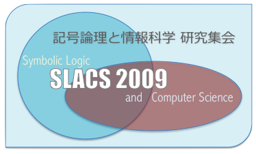

|  |
第26回記号論理と情報科学研究集会 (SLACS 2009) は，京都大学で開催の予定です． SLACSは，記号論理学と計算機科学の研究者や学生の相互交流を目的として開催されている研究集会です． 完成された研究のみならず，発展途上の話題も大歓迎です． |
SLACS 2009 は，10件の素晴らしいご発表と， （少なくとも）37名のみなさまのご参加により，大変有意義な研究集会となりました． ありがとうございました． |
SLACSの趣旨や過去の情報は，SLACS ホームページをご参照ください．
中澤 巧爾 （京都大学大学院情報学研究科）